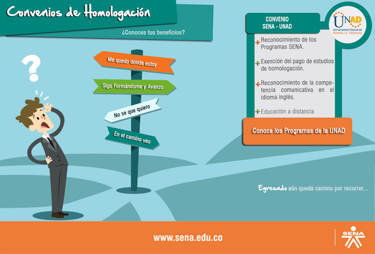

|
Homologacion
Es el reconocimiento que hace la institución de los estudios cursados por un estudiante en programa académico formal de la UNAD o de otras instituciones de educación superior (del ámbito nacional o internacional, legalmente reconocidas), o de las que estén autorizadas para ello, a través de los programas analíticos, syllabus o protocolos académicos de los cursos, asignaturas o materias cursadas con calificaciones aprobadas, acorde con las exigencias del plan de estudio del programa al cual aspira a ingresar. (Artículo 46, Acuerdo 0029 del 13 de diciembre de 2013. Consejo Superior Universitario).
El procedimiento inicia con la solicitud del aspirante o estudiante y finaliza con la legalización de los cursos homologados mediante Acuerdo emitido por el Consejo de Escuela; o con la notificación al estudiante de la no aprobación del estudio.
La gestión de los estudios de homologación se realiza a través de los siguientes medios:
1. Gestión a través del SISTEMA DE HOMOLOGACIONES SIHO:
Cuando el programa de origen se encuentra en la base datos del MEN con registro SNIES.
Para programas de Licenciatura cuando la institución de origen es una escuela normal superior autorizada por la escuela de ciencias de la educación – ECEDU
Para registrarse, consignar los datos y documentos requeridos y conocer el estado del trámite, los ASPIRANTES deben ingresar mediante la URL: http://homologacion.unad.edu.co/alumno/.
Los ESTUDIANTES, ingresan a través del Campus Virtual con su usuario y contraseña, y seleccionan el Sistema de Homologaciones SIHO, ubicado en la sección de servicios.
Los DOCENTES y FUNCIONARIOS ADMINISTRATIVOS ingresan por la intranet con su usuario y contraseña y acceden a SIHO a través de las Aplicaciones académicas.
El soporte técnico de SIHO está a cargo de los ingenieros Geovanni Catalán y Aldemar Mendoza, Skype:
SoporteHomologacionUNAD
2. Gestión a través del CENTRO (oficina de Registro y control académico - RCONT): Homologaciones en el marco de convenios interinstitucionales o Acuerdos de los Consejos de Escuela cuando el programa de origen no tiene registro SNIES. Consultar: https://goo.gl/Ma4F1s
Requisitos para estudios de homologación
Certificado de calificaciones con número de créditos por curso académico, calificación y fecha de realización de los estudios.
Carta de la institución de origen en la que se hace entrega al estudiante de los protocolos académicos o contenidos analíticos de los cursos académicos objeto de homologación.
Protocolos académicos de los cursos (contenidos analíticos) refrendado por la dependencia competente de la Institución de origen.
Fotocopia ampliada y legible del documento de identidad
Cancelar los derechos pecuniarios por concepto del estudio de homologación o nivelación, solicitando previamente el recibo de pago a través del FUS DIGITAL https://rca.unad.edu.co/fus/
Los documentos se entregan en la Oficina de Registro y Control académico del Centro para la revisión, donde además se informa al aspirante / estudiante si los debe subir al Sistema de Homologaciones SIHO o debe diligenciar el formulario F-7-3-1 descargándolo de este link: http://sig.unad.edu.co/documentos/sgc/formatos/F-7-3-1.doc
Consulte el procedimiento Homologaciones en:
https://sig.unad.edu.co/documentos/sgc/procedimientos/P-7-3.pdf
|